공략집 › 시작 가이드
시작 가이드
탭별 설명부터 클래식 스테이지, 커리어 트랙, 코인, 카드, 커피 모으는 법, 회차 빨리 돌리는 법까지 한 번에
- 커리어 1회차 = 인턴으로 입사해서 100주 버티기. 매주 일정 짜기 → 티켓 → 메시지 답장 → 한 주 마감이 전부예요.
- 체력은 0이 안 되게, 스트레스는 70을 안 넘게. 이 2개만 지켜도 첫 회차는 무난해요 💪
- CP, 코인은 100주를 끝까지 마친 회차에서만 나와요. 중간에 끝나면 0이에요!
- 커피는 서바이벌에서 벌고, 매일 출석, 퀘스트, 무한 철야는 꼭 챙기세요 ☕
안녕하세요! 새벽커밋 개발자 체험을 막 시작한 분부터, 이미 엔딩 도감을 반쯤 채운 분까지 한 번에 보는 시작 가이드예요. 처음이라면 위에서부터 차근차근, 고인물이라면 목차에서 필요한 곳만 골라 보세요 😉
탭 한눈에 보기 🗺️#
화면 아래 막대는 6칸이에요. 메신저 칸 하나에 화면이 5개 들어 있어서, 위쪽 스위치로 넘겨 다녀요. 나 탭 같은 건 따로 없고, 성장, 커리어는 홈에서 눌러 들어가요.
| 탭 | 안에 있는 것 | 언제 가나요 |
|---|---|---|
| 🏠 홈 | 커리어 시작하기, 회차 보너스, 칭호, 이번 주 일정, 티켓, 한 주 마감하기, 출석 체크, 상점, 공략집(튜토리얼 다시 보기) 버튼, 리더보드, 친구, 버그 바운티, 우편함 아이콘 | 회차를 진행할 때 대부분 여기 |
| 💻 업무 | 저장한 판, 서바이벌, 무한 철야, 노커피 도전, 커리어 트랙, 클래식 챌린지 | 커피 벌기, 클래식 스테이지, 커리어 트랙 깨기 |
| 💬 메신저 | 메신저, 가족, 우리 둘, 앨범, 동료 채널 (위쪽 스위치) | 답장, 연애, 가족 |
| 👥 팀 | 프로젝트, 동료(목록, 동료 도감, 합성, 신화 조각), 퀘스트, 도감 | 카드, 동료 키우기, 퀘스트 보상 받기 |
| 📈 투자 | 주식, 부동산, 실물자산 | 회차 돈 불리기 (투자 글 참고) |
| ⚙️ 설정 | 언어, 사운드, 저사양 모드, 테마, 개발 경험, 계정(로그인), 데이터, 문의하기, 약관 및 정책 | 가끔 |
그리고 탭은 아니지만 자주 여는 상점이 있어요. 홈의 상점 버튼이나 위쪽 코인, 신화 조각 숫자를 누르면 열려요.
| 상점 안 탭 | 무엇을 파나요 |
|---|---|
| 특가 상품 | 유료 상품 (아래 상점 유료 상품) |
| 시즌 패스 | 50단계 보상 받기, 시즌 패스 구매 |
| 카드팩 | 코인으로 팩 사기, 확률표 |
| 장비 | 코인으로 사는 영구 아이템 (장비, 소모품) |
| 소모품 | 회차 돈으로 사는 1회차용 아이템 |
홈 🏠#
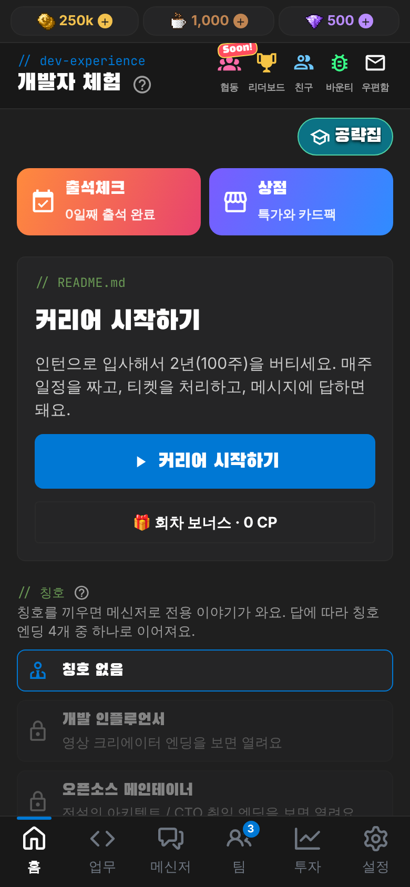

- 회차 시작 전: 커리어 시작하기, 회차 보너스(CP로 사는 영구 보너스), 칭호 고르기(칭호 글).
- 회차 중: 위에 주차, 회차(누르면 지난 기록), 직급(누르면 커리어 화면), 머리카락, 사이드 진행도, 가방, 능력치 막대(코딩력, 집중력, 체력, 스트레스, 평판, 운), 이번 주 일정, 이번 주 티켓, 한 주 마감하기.
- 위쪽 자원 막대: 회차 돈, 코인, 커피, 신화 조각. 커피 숫자를 누르면 커피 창이 열려요.
- 머리 아이콘: 리더보드, 친구, 버그 바운티, 우편함.
업무 💻#
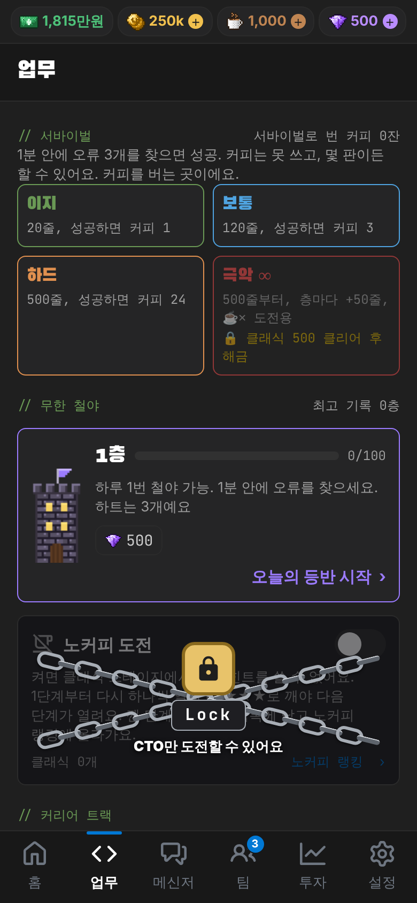
메신저 💬#
| 화면 | 설명 |
|---|---|
| 메신저 | 팀장, 선배, 후배, 히로인, 가족, 헤드헌터 등 모든 메시지. 답장 고르는 곳 |
| 가족 | 연애, 결혼, 육아 상태. 이번 주 일정에 데이트(연애 중), 육아(아이 있음), 집안일(결혼)이 빠지면 빨간 점 |
| 우리 둘 | 동거, 신혼 때 둘만의 메시지 (동거, 신혼, 앨범, 가족) |
| 앨범 | 아이가 태어나야 열려요 |
| 동료 채널 | 카드로 모은 동료들과의 대화, 동료 이야기 (아래 동료 채널) |
팀 👥#
| 화면 | 설명 |
|---|---|
| 프로젝트 | 동료와 함께 깨는 팀 프로젝트 192개 |
| 동료 | 안에 목록, 동료 도감, 합성, 신화 조각 |
| 동료 › 목록 | 내 동료 카드, 레벨업, 스킬, 기술 트리 |
| 동료 › 동료 도감 | 모든 동료 카드 보기 |
| 동료 › 합성 | 복사본으로 한 단계 위 동료 만들기 |
| 동료 › 신화 조각 | 조각으로 신화 교환, 별 올리기 |
| 퀘스트 | 일일 퀘스트, 도전 퀘스트 보상 받기 |
| 도감 | 엔딩, 업적, 버그 (엔딩 도감) |
팀 탭 아이콘의 숫자는 받을 수 있는 퀘스트 보상 + 받을 수 있는 도감 보상이에요. 숫자가 떠 있으면 무조건 들어가서 받으세요!
투자 📈#
| 화면 | 설명 |
|---|---|
| 주식 | 회차 돈으로 사고팔기, 시장 뉴스 |
| 부동산 | 지역별 부동산 |
| 실물자산 | 실물자산 투자 |
투자는 회차 돈(원)만 쓰고, 회차가 끝나면 사라져요. 자세한 구조와 운용법은 투자 글에 따로 정리했어요.
첫 회차 흐름: 튜토리얼 1~4장 🎓#
처음 켜면 4장짜리 튜토리얼이 진짜 화면 위에서 진행돼요. 손가락 표시를 따라 누르기만 하면 돼요.
- 1장, 클래식 스테이지업무 탭 → 클래식 1에서 오류 찾기를 배우고, 커피(힌트)를 한 번 써 봐요. 클래식 2는 혼자서.
- 2장, 커리어 시작하기, CP홈에서 회차 기록, 회차 보너스, 칭호를 구경하고 커리어 시작하기를 눌러요.
- 3장, 10회차 맛보기상점, 가방, 능력치, 일정, 티켓, 메신저, 투자를 한 바퀴 돈 뒤, 10주짜리 샘플 회차를 직접 플레이해요. 머신러닝과 추천 배치 일정표도 여기서만 체험해요.
- 4장, 출석체크, 동료출석 체크, 카드팩 뜯기, 동료, 스킬, 기술 트리, 친밀도, 합성, 신화 조각까지. 마지막 대사가 이제 진짜 출근하러 가 볼까요?예요.
튜토리얼을 끝까지 하든 중간에 튜토리얼 종료를 누르든, 에픽 팩 1개가 우편함으로 와요(계정당 1번). 꼭 우편함에서 받으세요 🎁
튜토리얼에서 받은 코인, 장비, 머신러닝은 실제 게임과 연결되지 않아요. 10주 샘플 회차도 CP, 코인이 0이에요. 튜토리얼 안에서는 권고사직도 일어나지 않아요.
나중에 다시 보고 싶으면 홈의 공략집 버튼에서 장을 골라 다시 볼 수 있어요(보상은 다시 안 줘요).
클래식 스테이지와 커리어 트랙, 뭐가 달라요? 🧩#
둘 다 업무 탭에 있는 혼자 하는 코드 모드예요. 클래식 스테이지(화면 이름은 클래식 챌린지)는 오류를 직접 찾아서 고치는 모드, 커리어 트랙는 줄마다 오류가 있는지 O/X로 판별하는 모드예요.
| 클래식 스테이지 | 커리어 트랙 | |
|---|---|---|
| 하는 일 | 파일에서 틀린 기호를 찾아 누르기 | 줄을 보고 오류 있음 O / 깨끗함 X |
| 스테이지 | 500개, 1번부터 하나씩 열림 | 5트랙 × 12챕터 × 100 = 트랙당 1,200개. 챕터는 다 열려 있고 챕터 안은 하나씩 |
| 언어 | JavaScript | 트랙마다 다름 (프론트엔드 JS, TS, 백엔드 Java, TS, 파이썬/AI, 데이터 SQL, 파이썬, 풀스택 5개 전부) |
| 별 기준 | 1~300: 오답 수 / 301~: 시간 | 챕터마다 1~80: 정답률 / 81~100: 시간 |
| 커피 보상 | 새로 딴 별 1개당 커피 1잔 (스테이지당 최대 3잔), 같은 스테이지는 하루 10번까지 | |
클래식 스테이지 (화면 이름은 클래식 챌린지) 공략#
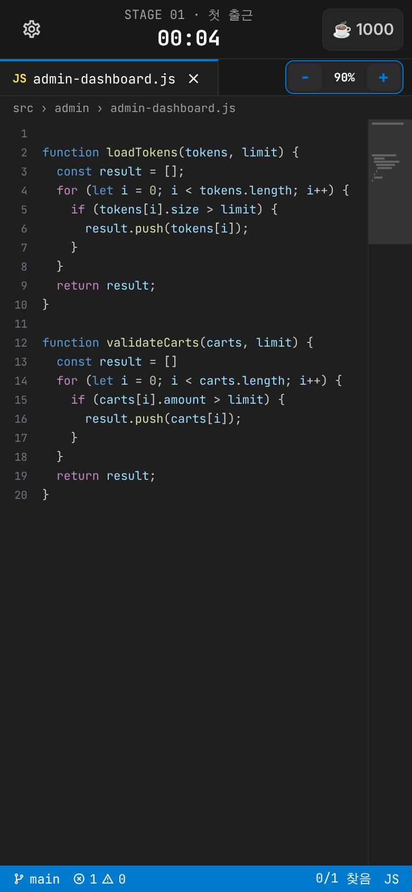
고치는 방법
- // 오늘의 업무 확인시작 전에 이 스테이지에서 찾을 오류 종류가 나와요. 업무 시작을 누르면 시계가 돌아요.
- 의심되는 줄 누르기줄이 크게 보이면 틀린 기호를 눌러요. 세미콜론, 콜론이 빠진 오류는 줄 끝을 눌러요.
- 막히면 커피오른쪽 위 ☕ 버튼(커피 마시기)을 누르면 오류가 있는 줄이 노란색이 돼요. 커피 1잔이 들어요.
- 오답 조심잘못 누르면 10초가 더해져요. 늦으면 팀장님이 재촉해서 시간이 또 늘어나요.
코드가 길면 옆으로 넘기고, 미니맵을 누르거나 끌면 그 줄로 바로 가요. +−로 글자 크기도 바꿀 수 있어요.
오류 13종과 등장 순서
1~300은 오류를 묶음별로 하나씩 가르쳐 주고, 301부터는 13종이 전부 섞여 나와요.
| 스테이지 | 나오는 오류 | 예시 |
|---|---|---|
| 1~20 | 빠진 세미콜론(;) | return total |
| 21~40 | 짝이 안 맞는 괄호, 닫는 중괄호 } 자리에 ) | fetch(url] |
| 41~80 | 위 3종 복습 | |
| 81~100 | 숫자 0 대신 알파벳 O | limit = 1O0; |
| 101~120 | 세미콜론 자리에 콜론, 콜론 자리에 세미콜론 | total = 0: |
| 121~160 | 지금까지 배운 것 복습 | |
| 161~180 | 점(.) 자리에 쉼표(,), 쉼표 자리에 점 | user,name |
| 181~200 | 복습 | |
| 201~210 | 짝이 안 맞는 따옴표 | name = 'admin"; |
| 211~220 | 대소문자가 틀린 값 | isActive = True; |
| 221~230 | 키워드 오타(글자 순서 바뀜) | retrun total; |
| 231~240 | 따옴표, 대소문자, 오타 복습 | |
| 241~250 | 틀린 화살표(=> / ->) | items.map((x) -> x.id) |
| 251~260 | 한글 입력 상태로 친 기호(；，) | count = 1； |
| 261~270 | 화살표, 전각 기호 복습 | |
| 271~300 | 따옴표, 대소문자, 오타, 화살표, 전각 기호 | |
| 301~500 | 13종 전부 |
커리어 트랙 공략#
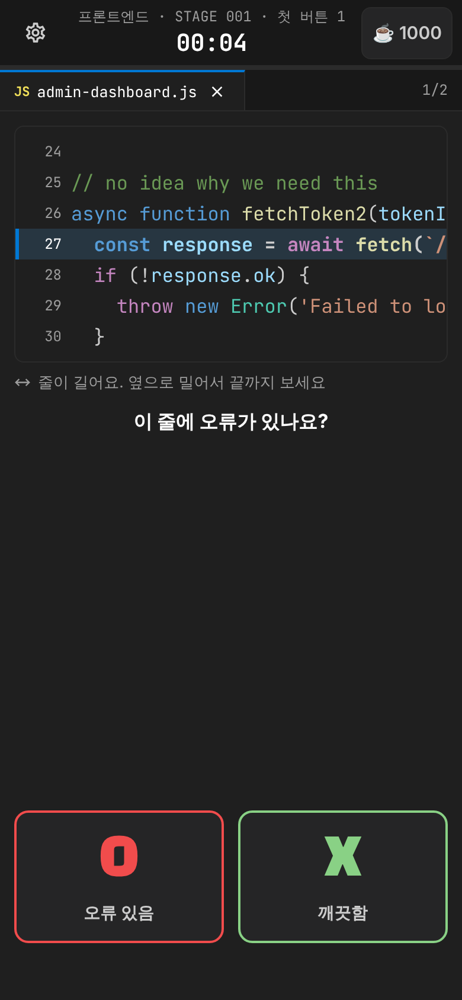
- 트랙 5개: 프론트엔드, 백엔드, 파이썬/AI, 데이터, 풀스택. 언제든 바꿀 수 있고 기록은 트랙마다 따로예요.
- 챕터마다 1~80은 오류를 종류별로 익히고, 81~100은 모든 오류가 나오는 지옥 구간이에요.
- 별: 1~80은 정답률 60%면 ★★, 80%면 ★★★. 81~100은 시간.
- 틀리면 오류 해설이 나오고, 해설을 보는 동안은 시간이 멈춰요. 공부용으로도 좋아요 📚
- 크기: 챕터 1번 스테이지는 판정 2번(60줄)으로 시작해서, 80번은 200번, 100번은 판정 2,000번(100,000줄)까지 커져요.
찍기(정답률 50% 근처)로는 ★ 1개에서 안 올라가요. 1~80에서 ★★★을 따려면 5번 중 4번은 맞혀야 해요.
저장하고 나가기#
클래식 스테이지, 커리어 트랙을 하다가 나가면 업무 탭 맨 위 저장한 판에 같은 파일, 시간, 진행 그대로 남아요. 모드마다 1칸이라 다른 스테이지를 저장하면 덮어써요. 이어서 한 판은 별과 커피는 그대로 받지만 노커피 기록에는 안 올라가요.
커리어 회차: 한 주는 이렇게 흘러가요 📅#
커리어는 인턴으로 대기업, 주식회사 새벽커밋에 입사해서 100주(2년)를 보내는 모드예요. 시작 능력치는 이래요.
| 코딩력 | 집중력 | 체력 | 스트레스 | 평판 | 돈 | 커밋 |
|---|---|---|---|---|---|---|
| 25 | 60 | 80 | 20 | 20 | 300만 원 | 10 |
팀장, 선배, 후배 호감도는 5~15 사이에서 무작위로 시작해요. 회차 보너스로 이 숫자들을 올릴 수 있어요(아래 회차 보너스). 인사평가는 4주차, 그다음 12주마다(16, 28 … 88주), 마지막은 99주차로 모두 9번이에요. 승진은 승진, 커리어, 퇴사 루트 글에서 자세히 다뤄요.
- 이번 주 일정 짜기월~금 + 주말, 6칸에 활동을 넣어요.
- 이번 주 티켓직접 하기 또는 대충 처리.
- 메시지 답장메신저의 메시지에 답해요. 답장마다 능력치, 호감도가 바뀌어요.
- 한 주 마감하기일정, 티켓, 주급, 생활비가 정산되고, 필수 메시지가 오면 답한 뒤 다음 주로.
이번 주 일정 세팅법#
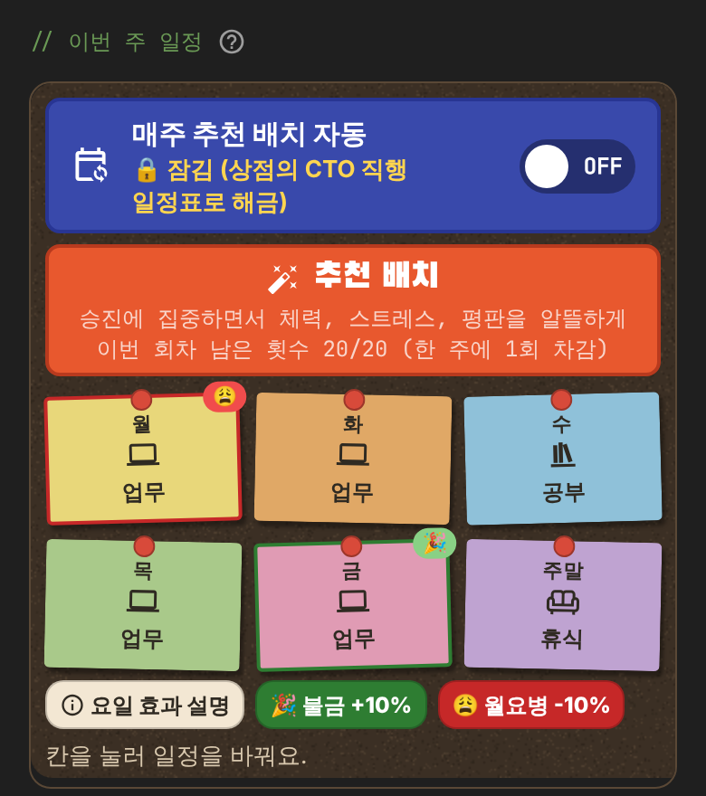
활동 하나가 하루 동안 주는 기본 효과예요(회사, 장비, 회차 보너스로 조금씩 달라져요). 주말 칸은 하루 반이라 효과 ×1.4예요.
| 활동 | 좋은 점 | 나쁜 점 | 주말 |
|---|---|---|---|
| 💻 업무 | 성과 1.2, 평판 1, 코딩 0.5, 커밋 1 | 체력 -5, 스트레스 +4, 집중 -2 | 가능 |
| 🌙 야근 | 성과 2.2, 평판 2, 코딩 0.6, 커밋 1, 대기업은 야근 수당 3만 원 | 체력 -10, 스트레스 +8, 집중 -4, 머리카락 -0.5 | 없음 |
| 📚 공부 | 코딩 2, 커밋 5, 집중 +1 | 체력 -2, 스트레스 +2 | 가능 |
| 🏃 운동 | 체력 +9, 스트레스 -3, 집중 +2 | 가능 | |
| 🛋 휴식 | 체력 +8, 스트레스 -7, 집중 +4 | 가능 | |
| 🚀 사이드 프로젝트 | 사이드 0.7, 커밋 3, 스트레스 -2, 코딩 0.5 | 체력 -4 | 가능 |
| 🍜 동료와 점심 | 스트레스 -15, 팀장 호감도 +6, 선배, 후배 +3, 평판 1 | 주급의 15%를 써요 | 없음 |
| 💞 데이트 | 관계 유지, 스트레스 -8, 집중 +1 | 체력 -2, 돈 -50,000원 | 가능 (상대가 있을 때) |
| 👶 육아 | 가족 유지, 스트레스 -2 | 체력 -5, 돈 -20,000원 | 가능 (아이가 있을 때) |
요일 효과 (일정 배치 보너스)
| 효과 | 조건 | 결과 |
|---|---|---|
| 🔥 연속 집중 | 같은 활동(업무, 야근, 공부, 사이드 중 하나)을 3일 연속 | 3일째부터 그 활동 효과 +20% |
| 🎉 불금 | 금요일의 업무, 야근, 공부, 사이드 | +10% |
| 😩 월요병 | 월요일의 업무, 야근, 공부, 사이드 | -10% |
| 😵 야근 후유증 | 야근 다음 날 업무나 야근 | 성과, 평판 -30% (사이에 휴식, 운동을 끼우면 없어짐) |
| ⭐ 평가 주간 | 인사평가가 있는 주 | 성과 ×1.5 |
| 🛋 주말 ×1.4 | 주말 칸 | 무엇을 넣든 1.4배 |
| 💔 주말 출근 | 연애, 결혼 중에 주말 업무 | 상대 호감도 -2 |
팀장 호감도가 50 이상인데 그 주에 동료와 점심이 한 번도 없으면 팀장 호감도 -3, 80 이상이면 기대치가 높아져 매주 -2씩 빠져요.
일정별 1주 변화 비교
시작 상태의 인턴으로, 일정 칸만 놓고 계산한 1주 합계예요. 티켓, 메시지, 회사 주간 스트레스(대기업 +2)는 빠져 있어요.
| 일정 (월~주말) | 성과 | 체력 | 스트레스 | 평판 | 코딩 |
|---|---|---|---|---|---|
| 기본: 업무, 업무, 공부, 업무, 업무, 휴식 | 4.3 | -10.8 | +8.2 | +4.0 | +4.0 |
| 업무 5 + 휴식 | 6.1 | -13.8 | +10.2 | +5.6 | +2.8 |
| 업무, 업무, 점심, 업무, 업무, 휴식 | 4.3 | -8.8 | -8.8 | +5.0 | +2.0 |
| 업무, 야근, 휴식, 업무, 야근, 휴식 | 6.2 | -10.8 | +7.2 | +6.1 | +2.2 |
| 야근 5 + 휴식 | 8.3 | -38.8 | +30.2 | +8.4 | +3.4 |
야근 5일은 성과는 제일 높지만 체력이 1주에 38.8씩 빠져요. 체력 80에서 시작하면 3주째에 쓰러지고, 스트레스도 금방 100을 찍어요. 야근은 야근 → 휴식처럼 사이에 쉬는 날을 끼워야 후유증(-30%)도 피하고 몸도 버텨요.
추천 배치를 누르면 승진에 맞춰 일정을 대신 짜 줘요. 무료로는 한 회차에 20번이고, 같은 주에 다시 눌러도 횟수가 안 줄어요. 다만 업무, 야근, 공부, 운동, 휴식(평일은 점심도)만 써서 6칸을 전부 새로 짜기 때문에 데이트, 육아 칸도 사라져요. 연애, 육아 중이면 누른 뒤 그 칸을 다시 넣어 주세요 💞
사이드 프로젝트
사이드가 20을 넘으면 매주 수익이 들어와요(진행도가 오를수록 커져요). 25에서 평판 +3, 커밋 +20, 50에서 평판 +6, 75에서 500만 원, 평판 +4, 100에서 평판 +10, 커밋 +50과 사이드 프로젝트 전용 엔딩이 열려요.
이번 주 티켓#
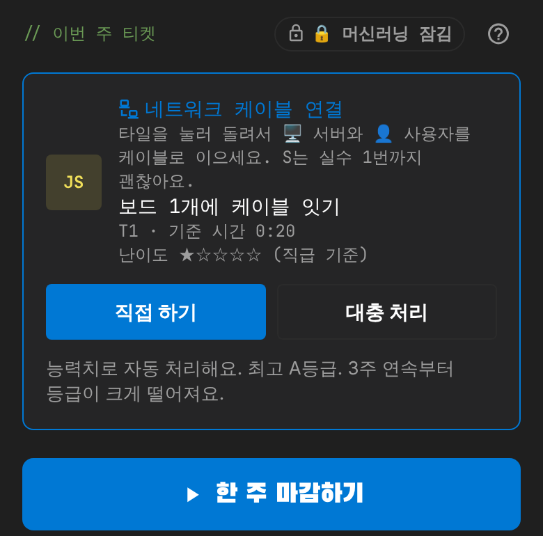
티켓 종류 6가지
매주 하나씩 오고, 6주 묶음마다 6종류가 1번씩 나와요. 첫 주는 항상 버그 수정이고, 같은 종류가 2주 연속 나오지는 않아요.
| 종류 | 하는 일 | 커피 도움 |
|---|---|---|
| 🐛 버그 수정 | 코드 속 오류 찾기 (클래식 스테이지와 같은 방식) | 오류 줄 표시 |
| 🔍 배포 전후 비교 | 두 화면 틀린 그림 찾기 | 바뀐 곳 1곳 알려주기 |
| 🔥 서버 과부하 막기 | 과열된 서버를 눌러서 식히기 | 서버 전부 식히기 |
| 🚀 배포 순서 정하기 | 필요한 것부터 켜기 | 지금 켤 수 있는 카드 1장 표시 |
| 🔌 네트워크 케이블 연결 | 타일을 돌려 케이블 잇기 | 타일 1개 맞추기 |
| 📋 로그 분류 | 빨간 ⛔ ERROR만 누르기 (직급이 높아지면 🚨 CRITICAL도) | 화면의 ERROR 전부 처리 |
버그 수정 말고는 코딩을 몰라도 돼요. 차장까지는 가벼워요(버그 수정 오류 1~5개, 다른 종류도 라운드 절반). 부장부터 버그 수정은 오류 10개, 파일과 미니게임이 직급마다 커져요.
등급 기준
| 등급 | 조건 (기준 시간 = 오류 수 × (20 + 티어×6)초) | 주 마감 효과 |
|---|---|---|
| S | 기준 시간 안 + 오답 1번 이하 | 평판 +3, 팀장 호감도 +2 |
| A | 기준 1.6배 안 + 오답 3번 이하 | 평판 +1, 팀장 +1 |
| B | 기준 2.6배 안 | 팀장 +1 |
| C | 그 밖 | 평판 -2, 팀장 -3 |
| 안 함 | 티켓을 안 하고 마감 | 성과 -3, 평판 -3, 팀장 -5, 스트레스 +3 |
끝난 티켓은 S가 될 때까지 다시 할 수 있고, 더 좋은 등급만 남아요. 다시 해도 떨어지지 않으니 부담 없이 재도전하세요.
스트레스가 70 이상이면 대충 처리도 머신러닝도 막혀요. 팀장이 직접 하라고 해요.
능력치가 티켓에 주는 효과
| 조건 | 효과 |
|---|---|
| 체력 20 미만 | 오답마다 시간 벌점 +5초 |
| 집중력 30 미만 | 코드가 평소 밝기의 55%로 어두워짐 |
| 스트레스 70 이상 | 팀장 재촉 2배, 자동 처리 불가 |
| 코딩력 70 이상 | 미니맵에 오류 위치가 흐리게 보임 |
| 선배 호감도 70 이상 | 티켓 시작 때 선배가 오류 1개를 찾아 줌 |
| 차장 이상 + 누적 티켓 100 / 200 / 300개 | 베테랑 보너스: 오류 -20% / -30% / -40% |
| 전설, 신화 동료 보유 | 동료별 티켓 패시브로 오류 감소 (베테랑과 합쳐 최대 절반) |
체력, 스트레스, 번아웃, 쓰러짐 🔥#
여기가 제일 중요해요. 판정은 주 마감 때 하는데, 마감 순간의 숫자가 아니라 그 주에 찍었던 최저 체력과 최고 스트레스로 봐요. 답장 하나로 체력이 0을 찍었다면, 주말 휴식으로 다시 올라가도 쓰러진 걸로 쳐요.
| 상황 | 조건 | 결과 |
|---|---|---|
| 🤒 쓰러짐 | 그 주에 체력이 한 번이라도 0 | 다음 1주 병가, 체력 45로 |
| 🔥 번아웃 | 그 주에 스트레스가 한 번이라도 100 | 평판 -10, 머리카락 -5, 2주 휴식, 스트레스 40, 체력 최소 50 |
| 🍗 번아웃 3번 | 한 회차에 번아웃 3회 | 치킨집 엔딩으로 회차 종료 |
| 🛌 쉬는 주 | 병가, 번아웃 휴식 | 체력 +25, 스트레스 -25, 집중 +10. 일정, 티켓, 연애 체크는 건너뜀 |
| 💇 스트레스 70 이상 | 주 마감 때 | 매주 머리카락 -1 |
막는 방법도 있어요: 장비 진정해 친구(번아웃 1번 막기), 구사일생(쓰러짐 대신 체력 100), 결혼 후 넘친 호감도 특전 번아웃 방패, 회차 보너스 실손보험, 황금 낙하산. 장비는 장비, 소모품, 특전은 히로인 공략을 보세요.
체력은 0이 안 되게, 스트레스는 70을 넘지 않게. 이 선만 지키면서 업무, 야근을 넣으면 돼요. 주말 1칸 휴식, 일주일에 점심 1번이면 스트레스는 거의 잡혀요.
메시지 답장, 읽씹#
한 주를 마감하면 메신저에 메시지가 쌓여요. 답장마다 능력치와 호감도가 바뀌고, 답하면 바로 답장이 와요. 지난주에 답 안 한 메시지는 다음 마감 때 읽씹으로 처리되고, 알림 지우기도 전부 읽씹이에요. 호감도가 있는 사람(히로인, 팀장, 선배, 후배)은 읽씹하면 호감도가 깎이니 조심하세요. 프로필을 누르면 맨 위에 고정돼요.
회차 끝 보상: CP와 코인#
| 보상 | 조건 | 양 |
|---|---|---|
| 경력 포인트(CP) | 100주를 끝까지 마친 회차 | 20 + 마지막 직급 (인턴 20 … CTO 29) |
| 코인 | 100주를 끝까지 마친 회차 | 2,000 + 직급×100 (인턴 2,000 … CTO 2,900) |
| 카드팩 | 새 엔딩을 볼 때마다 | 기본 엔딩 레어 팩, 칭호 엔딩 에픽 팩 |
| 광고 2배 | 10분 이상 플레이한 회차 | CP, 코인 1번 더 |
권고사직, 치킨집, 창업 퇴사처럼 100주 전에 끝난 회차는 CP, 코인이 0이에요(새 엔딩 카드팩과 도감 보상은 받아요). 그리고 10분도 안 걸린 회차는 100주를 채워도 CP, 코인, 커밋 XP가 없어요. 창업하려고 퇴사했다면 직급 없이 20이에요.
재화 총정리: 커피, 코인, 카드 💰#
게임에는 재화가 5가지 있어요. 회차 돈(원, 회차 안에서만), 커피(힌트), 코인(장비, 동료), 신화 조각, CP(회차 보너스).
커피 ☕ 얻는 법 전부#
커피는 클래식 스테이지, 커리어 트랙, 티켓에서 힌트 1번에 1잔이에요. 팀 프로젝트에서는 못 써요. CTO 엔딩의 도감 보상을 받으면 무한 커피(∞)가 돼요.
| 어디서 | 얼마나 | 비고 |
|---|---|---|
| 서바이벌 승리 | 이지 1, 보통 3, 하드 24 | 무제한 반복. 커피의 주 수입원. 극악은 커피 없음 |
| 출석 체크 | 매일 5 | |
| 일일 퀘스트 | 4개 × 5 | 팀 프로젝트 클리어, 무한 철야 1회, 별 3개 클리어, 티켓 직접 하기 |
| 클래식 스테이지, 커리어 트랙, 팀 프로젝트 | 새 별 1개당 1 (스테이지당 최대 3) | 같은 스테이지 하루 10번까지 |
| 광고 무료 커피 | 30 | 하루 횟수 제한 |
| 서바이벌 커피 2배 | 그 판 커피 ×2 | 광고, 광고 제거 패키지는 자동 |
| 무한 철야 | 층 첫 클리어마다 1 (100층 = 100) | |
| 도감 버그 | 새 오류 종류마다 5 | 5개 언어 56종 = 280잔 |
| 동료 이야기 | 챕터 보상 (대개 1) | 동료 채널 |
| 친구 | 3 (친구 1명이 하루 1번) | 우편함으로 |
| 오늘의 핫픽스 | 평일 10, 주말 20 | |
| 서버 장애 대응 | 최대 20 (주간) | 모두가 찾은 오류 비율만큼 |
| 시즌 패스 무료 줄 | 합계 90 | 패스 줄은 합계 920 |
| 닉네임 추첨 | 100 (패스 추첨 1,000) | 당첨 시 |
커피는 한 덩어리로 보이지만, 상점에서 산 커피는 따로 기억해 뒀다가 쓸 때 유료 커피부터 빠져요.
서바이벌 하드는 1판에 커피 24잔이에요. 이지(1잔), 보통(3잔)으로 손을 풀고, 익숙해지면 하드가 시간 대비 제일 많이 벌려요.
코인 🪙 얻는 법, 쓰는 법#
처음엔 300코인으로 시작해요. 팀 프로젝트는 코인을 안 줘요.
| 얻는 곳 | 양 |
|---|---|
| 회차 완주 (100주) | 2,000~2,900 |
| 일일 퀘스트 오늘 회차 1번 완주하기 | 2,000 + CP 20 |
| 출석 체크 | 매일 1,000 |
| 무한 철야 층 첫 클리어 | 층마다 100 (100층 = 10,000) |
| 깃 블레임 릴레이 | 팀이 3개 고칠 때마다 2,000 |
| 오늘의 핫픽스 | 평일 2,000, 주말 3,000 |
| 서버 장애 대응 | 최대 10,000 (주간) |
| 시즌 패스 무료 줄 | 합계 7,800 |
| 장비 팔기 | 산 값의 10% |
| 쓰는 곳 | 가격 |
|---|---|
| 카드팩 | 일반 2,000, 레어 8,000, 에픽 20,000 (전설 팩은 못 삼) |
| 장비 | 장비, 소모품 참고 |
| 합성 | 1,000, 2,500, 50,000, 100,000 |
| 기술 트리 초기화 | 500 |
카드팩 🃏 확률과 천장#
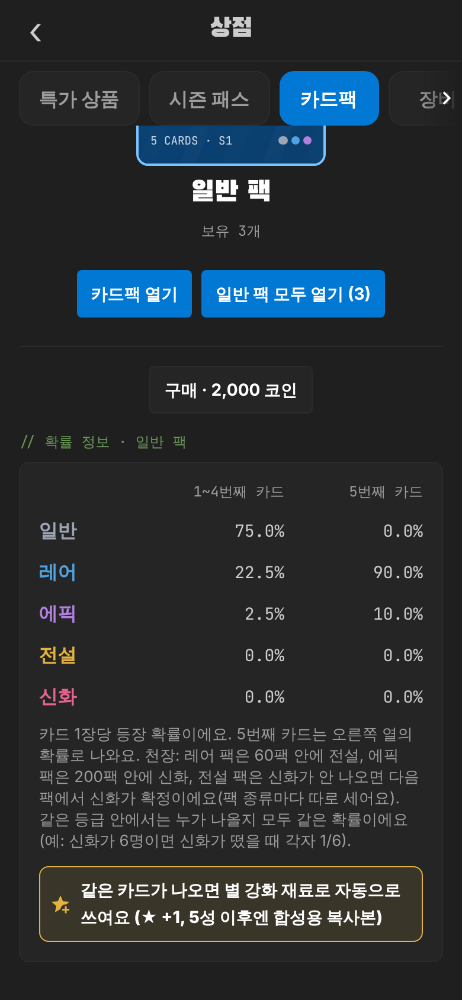
팩 1개에 카드 5장. 1~4번째와 5번째(보장 카드)의 확률이 달라요.
| 팩 | 1~4번째 | 5번째 | 천장 |
|---|---|---|---|
| 일반 팩 (2,000코인) | 일반 75%, 레어 22.5%, 에픽 2.5% | 레어 90%, 에픽 10% | 없음 |
| 레어 팩 (8,000코인) | 레어 65%, 에픽 35% | 레어 45%, 에픽 54.7%, 전설 0.3% | 60팩 안에 전설 이상 1장 |
| 에픽 팩 (20,000코인) | 레어 50%, 에픽 47.5%, 전설 2.5% | 에픽 89.5%, 전설 10%, 신화 0.5% | 200팩 안에 신화 1장 |
| 전설 팩 (구매 불가) | 에픽 13%, 전설 62%, 신화 25% | 전설 63%, 신화 37% | 신화 없이 끝나면 다음 전설 팩 신화 확정 |
| 목표 | 평균 | 중앙값 | 90%가 이 안에 | 첫 팩에 나올 확률 |
|---|---|---|---|---|
| 일반 팩에서 에픽 | 5.3팩 | 4팩 | 11팩 | 18.8% |
| 레어 팩에서 전설 이상 | 54.5팩 | 60팩 | 60팩 | 0.3% |
| 에픽 팩에서 전설 이상 | 5.3팩 | 4팩 | 11팩 | 19.1% |
| 에픽 팩에서 신화 | 126.8팩 | 139팩 | 200팩 | 0.5% |
| 전설 팩에서 신화 | 1.2팩 | 1팩 | 2팩 | 79.9% |
신화 조각#
신화 조각 100개면 원하는 신화 동료 1명, 30개면 가진 신화의 별 +1이에요. 신화는 별 5개가 되면 무지개 카드가 돼요. 조각은 무한 철야 30, 60, 100층(등반마다, 하루 최대 3개), 시즌 패스 무료 줄(합계 20), 인기도, 버그 바운티 보상 등에서 와요.
매일 챙길 루틴 ✅#
출석 체크#
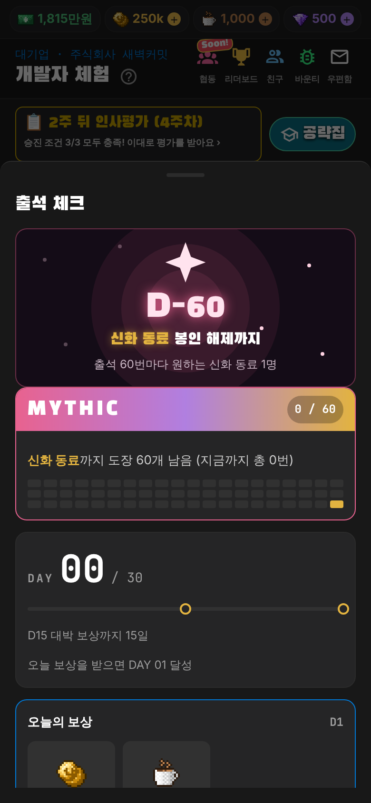
| 날 | 보상 |
|---|---|
| 매일 | 커피 5 + 코인 1,000 |
| 3일마다 (3, 6, 9 …) | + 레어 팩 1 |
| 15일 | + 에픽 팩 1 |
| 30일 | + 전설 팩 1 (그다음 날 1일부터 다시) |
| 누적 60번마다 | 신화 동료 1명 (우편함에서 골라요) |
출석 체크는 로그인한 계정만 할 수 있어요(게스트는 로그인하러 가기가 떠요). 연속이 끊겨도 달력 칸과 누적 출석은 그대로예요. 오늘 출석하면 내일 닉네임 추첨 대상도 돼요.
퀘스트#
일일 퀘스트는 자정에 초기화, 도전 퀘스트는 1번만. 조건을 채우면 팀 탭 › 퀘스트에서 받기를 눌러야 들어와요. 일일 퀘스트는 하나당 커밋 XP 200도 줘요.
| 일일 퀘스트 | 보상 |
|---|---|
| 오늘 회차 1번 완주하기 (100주, 10분 이상) | CP 20, 코인 2,000 |
| 팀 프로젝트 1회 클리어 | 커피 5 |
| 무한 철야 1회 플레이 | 커피 5 |
| 팀 프로젝트 별 3개로 클리어 | 커피 5 |
| 이번 주 티켓 직접 하기 1회 | 커피 5 |
| 오늘의 엔딩 (결혼 → 권고사직 → 연애 → 육아 → 아이 대학생, 날마다 차례로) | 일반 팩 1 |
| 회차 3번 완주하기 | 레어 팩 1 |
도전 퀘스트는 단계형이라 지금 단계만 보여요: 팀 프로젝트 별, 카드팩 개봉, 엔딩 수, 동료 레벨, 등급별 동료 영입, 동료 수, 큰 프로젝트 클리어(줄 수), 프로젝트 수, 친밀도 하트, 클래식 별, 커리어 트랙 별, 서바이벌 단계별 첫 클리어, 회차 완주 수. 보상은 앞 단계 일반 팩, 뒤 단계 레어 팩이에요.
보상형 광고#
| 광고 | 보상 |
|---|---|
| 회차 보상 2배 | 10분 이상 플레이한 회차의 CP, 코인 1번 더 |
| 무한 철야 부활 | 떨어진 층에서 하트 가득 다시 |
| 서바이벌 2배 | 이긴 판의 커피 ×2 |
| 무료 카드팩 | 일반 팩 1 |
| 무료 커피 | 커피 30 |
광고마다 하루 횟수 제한이 있고 남은 횟수는 버튼에 보여요. 광고 제거 패키지가 있으면 광고 없이 바로 받아요.
시즌 패스 (커밋 XP)#
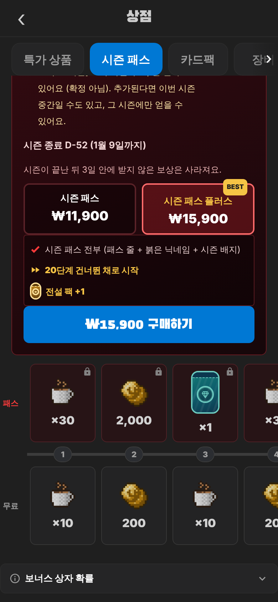
시즌(이번 시즌 신입 공채 시즌, 60일) 동안 커밋 XP 1,000마다 1단계, 50단계까지. 무료 줄은 누구나, 패스 줄은 시즌 패스를 산 사람만 받아요. 시즌이 끝나도 3일 동안은 받을 수 있어요.
| 커밋 XP 얻는 법 | XP |
|---|---|
| 회차 100주 완주 (10분 이상) | 1,000 |
| 클래식, 커리어 트랙 클리어 | 50 (★★★ 100) |
| 팀 프로젝트 클리어 | 150 |
| 무한 철야 | 층 × 3 (40층 = 120) |
| 서바이벌 승리 | 이지 30, 보통 50, 하드 80, 극악 층마다 100 |
| 일일 퀘스트 | 1개당 200 |
하루 상한은 2,000 XP(일일 퀘스트 포함)이고, 같은 스테이지, 프로젝트는 하루 3번까지만 XP를 줘요. 그래서 50단계(50,000 XP)는 아무리 빨라도 25일이 걸려요. 매일 조금씩이 정답이에요.
| 줄 | 50단계까지 합계 | 50단계 보상 |
|---|---|---|
| 무료 | 커피 90, 코인 7,800, 신화 조각 20, 일반 팩 8, 레어 팩 6, 에픽 팩 3 | 신화 조각 20 |
| 패스 | 커피 920, 코인 66,000, 신화 조각 50, 레어 팩 10, 에픽 팩 8, 전설 팩 1, 신화 동료 1 | 원하는 신화 + 조각 30 |
50단계를 넘으면 1,000 XP마다 줄마다 ? 보너스 상자가 생겨요. 무료 상자: 커피 10 (40%), 코인 200 (40%), 일반 팩 (20%). 패스 상자: 커피 50 (32%), 코인 1,000 (32%), 레어 팩 (28%), 에픽 팩 (7.5%), 신화 조각 1 (0.5%).
오늘의 닉네임 추첨#
어제 출석한 사람 중에서 매일 5명을 뽑아요(7일 안에 당첨된 사람은 빼고). 1~3번은 출석한 모두가 대상(에픽 팩 3, 레어 팩 1, 커피 100), 4~5번은 시즌 패스 보유자 대상(코인 10,000, 커피 1,000)이에요. 배포 차단기를 내려서 결과를 보면 보상이 우편함으로 와요(7일 안에).
우편함#
튜토리얼 보상, 출석, 도감의 신화 동료 고르기, 친구 커피, 추첨 당첨, 어제 안 받은 무한 철야 보상 등이 모여요. 홈 오른쪽 위 아이콘이에요. 신화 동료는 우편함에서 받으면 고르는 창이 열려요.
동료와 팀 프로젝트 👥#
동료 카드#
동료는 84명(일반 24, 레어 22, 에픽 17, 전설 15, 신화 6)이에요. 처음엔 이 인턴, 최 신입, 정 QA, 오 계약직, 박 DBA 5명과 일반 팩 1개로 시작해요. 동료는 팀 프로젝트에서만 일해요(커리어 티켓을 대신 찾아 주지 않아요. 전설, 신화의 티켓 패시브만 예외).
- 능력치: 속도(1초에 훑는 줄 수)와 정확도(지나간 오류를 알아챌 확률, 낮으면 오탐).
- 레벨: 코인으로 최대 30. 레벨이 오르면 기술 트리 포인트도 생겨요.
- 별: 같은 카드가 또 나오면 바로 별 +1(최대 5). 그 뒤는 복사본으로 쌓여서 합성 재료가 돼요.
- 전문 분야: 그 언어에서 1.5배 빠르고, 그 오류 종류를 더 잘 찾아요.
합성#
| 재료 | 코인 | 결과 (항상 성공) |
|---|---|---|
| 일반 복사본 2 | 1,000 | 무작위 레어 |
| 레어 복사본 2 | 2,500 | 무작위 에픽 |
| 에픽 복사본 5 | 50,000 | 무작위 전설 |
| 전설 복사본 4 | 100,000 | 무작위 신화 |
합성 재료로 카드를 직접 고를 때는 복사본뿐 아니라 카드 자체도 넣을 수 있어요. 카드 자체를 쓰면 그 동료가 목록에서 사라져요(화면에 빨간 경고가 나와요).
팀 프로젝트와 팀 파워#
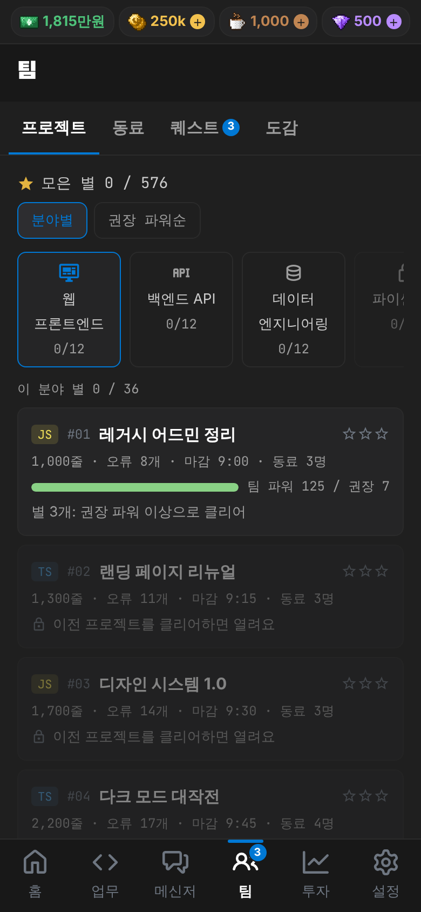
- 16분야 × 12개 = 192개. 처음엔 3분야가 열리고, 프로젝트를 3개 깰 때마다 분야가 1개씩 더 열려요. 분야 안은 순서대로.
- 파일은 1,000줄부터 시작해 마지막(최종, 신화만 참가)은 80,500줄이에요.
- 팀 파워 = 동료마다 속도 × 정확도를 더한 값. 그 언어 전문가는 속도 1.5배, 정확도 +5%.
- 팀 파워가 권장 파워보다 1이라도 낮으면(반올림 비교) 과부하로 속도가 1/4이 되고 스킬도 못 써서 거의 실패해요. 권장 이상으로 이기면 무조건 별 3개예요.
- 동료가 보고함에 올린 줄이 진짜면 수정, 아니면 오탐. 멀쩡한 줄을 수정하면 8초, 직접 눌러서 틀리면 3초가 줄어요. 커피는 못 써요.
- 회차 중에 이기면 그 주 성과에 +1.5 / 2.5 / 4(별 1/2/3, 회사 성과 배수 적용: 대기업은 0.9배, 주 최대 6)가 붙어요. 인사평가 직전에 써먹기 좋아요.
- 동료 조합: 정해진 동료를 같이 데려가면 팀 전체에 보너스가 붙어요(23가지). 예를 들어 QA 듀오(정 QA + 문 QA리드)는 잘못된 보고 -25%예요. 편성 화면에서 켜진 조합은 초록색이에요.
기술 트리#
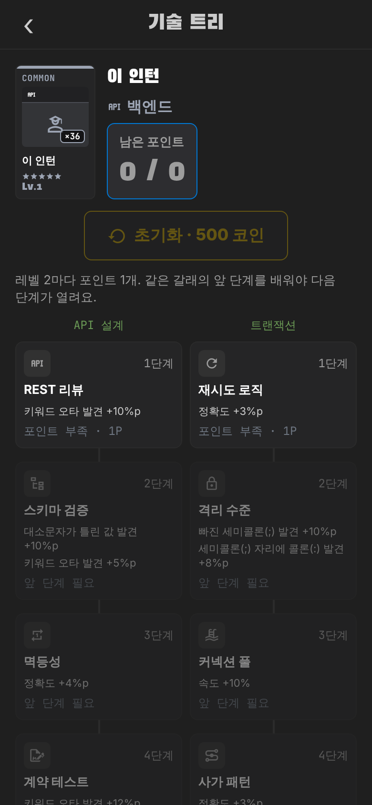
동료마다 분야(프론트엔드, 백엔드, 서버/인프라, 데이터베이스, 보안, 데이터/ML, QA)에 따라 트리가 달라요. 레벨업으로 얻은 포인트를 찍고, 마음에 안 들면 500코인으로 초기화해요.
동료 채널과 친밀도#
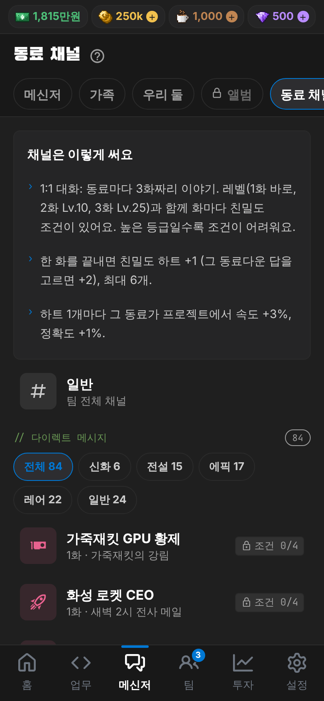
메신저 › 동료 채널에서 동료 이야기를 끝까지 보면 친밀도 하트가 올라요. 하트 1개마다 속도 +3%, 정확도 +1%(최대 6개). 챕터를 마치면 커피(대개 1잔)도 줘요. #일반 방은 프로젝트 반응과 입사 인사를 구경하는 곳이에요. 대답을 잘못하면 그 챕터 하트를 영영 놓칠 수 있어서, 유료 친밀도 초기화권(커피 5,000으로도 살 수 있음)이 따로 있어요.
업무 탭 도전 모드 🏆#
서바이벌#
| 단계 | 파일 | 승리 커피 | 특징 |
|---|---|---|---|
| 이지 | 20줄 | 1 | 정답 줄 번호가 노란색으로 보여요 |
| 보통 | 120줄 | 3 | |
| 하드 | 500줄 | 24 | 커피 주 수입원 |
| 극악 | 500줄부터 층마다 +50줄 (최대 2,000줄) | 0 | 클래식 500 클리어 후 해금. 랭킹용 |
60초 안에 오류 3개, 커피는 못 쓰고, 오답은 5초 감점이에요. 몇 번이든 할 수 있어요. 극악은 90초로 시작해서 층 하나(오류 3개)를 깰 때마다 남은 시간에 30초가 더해지고, 다음 파일은 50줄씩 길어져요(2,000줄까지, 오답 10초). 판 도중에 나가면 패배로 쳐요.
무한 철야 (타워)#
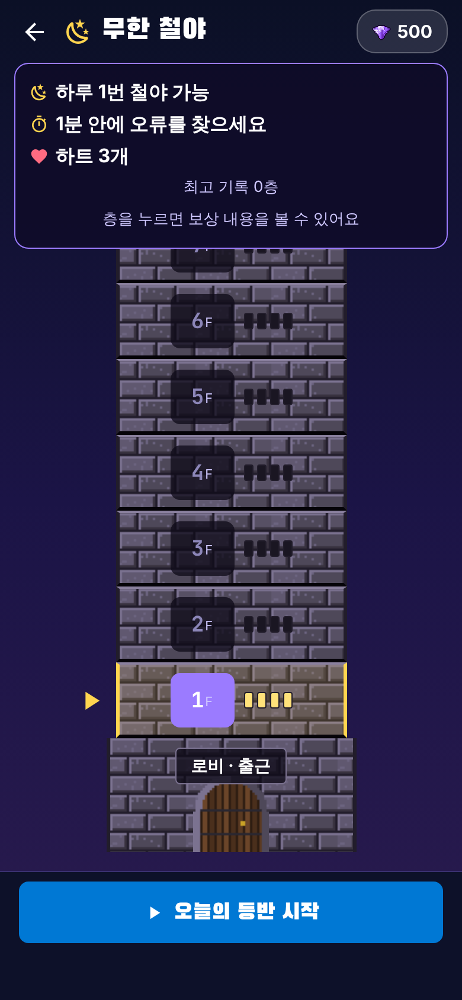
- 하루 1번 1층부터 올라가요. 층마다 1분, 하트 3개, 진짜 커피는 못 써요.
- 층마다 보급품이 새로 나와요: 철야 커피(오류 1개 바로 수정), 에너지 드링크(5층부터, 하트 +1), 야식(7층부터, +15초). 남은 건 다음 층으로 안 넘어가요.
- 철야 동료는 1, 9, 24, 44, 69층을 깨면 합류해요. 철야 장비는 15층을 깨면 노이즈캔슬링 헤드폰(가짜 보고 -40%), 35층을 깨면 듀얼 모니터(속도 +15%), 60층을 깨면 기계식 키보드(층마다 첫 실수는 하트 안 깎임)가 생겨요.
- 크기: 1~30층 150~1,455줄(오류 3~6), 31~60층 2,000~13,000줄, 61~100층 20,000줄까지(오류 최대 27).
- 실패하면 그날 등반 끝. 광고(또는 광고 제거 패키지)로 그 층부터 부활할 수 있어요.
| 보상 | 내용 |
|---|---|
| 층 첫 클리어 | 코인 100 + 커피 1 (100층 전부 = 코인 10,000 + 커피 100) |
| 30 / 60 / 100층 첫 클리어 | + 일반 팩 / 레어 팩 / 에픽 팩 |
| 30 / 60 / 100층 (등반마다) | 신화 조각 1 (하루 최대 3) |
보상은 층 옆에서 눌러 받아요. 그날 안 받은 보상은 다음 날 우편함으로 가요.
철야 커피는 층 끝까지 아껴 두세요. 동료가 먼저 찾게 두고 남은 오류에 쓰는 게 이득이에요. 어차피 다음 층으로 못 가져가니 다 쓰고 올라가요.
노커피 도전#
CTO 엔딩을 본 계정만 켤 수 있는 스위치예요(업무 탭). 켜면 클래식에서 커피 힌트를 못 쓰고, 1번부터 따로 올라가요(앞 스테이지를 노커피 ★★★로 깨야 다음이 열림). ★★★로 깬 스테이지만 노커피 기록(☕ ✕)에 남고 노커피 클래식 랭킹에 올라가요. 노커피로 깨도 일반 클리어 보상은 그대로 받아요. 커리어 트랙은 해당 없어요.
친구와 함께 🤝#
| 기능 | 내용 | 보상 |
|---|---|---|
| 친구 | 홈 위 친구 아이콘. 친구에게 하루 1번 커피 보내기 | 받는 쪽 커피 3 (우편함) |
| 리더보드 | 극악 서바이벌, 클래식(★★★ 수), 노커피 클래식, 무한 철야(최고 층) | 순위 |
| 코드 리뷰 1대1 | 다른 플레이어 프로필에서 신청. 둘이 같은 200줄 파일, 오류 3개. 더 많이 찾은 쪽, 같으면 빠른 쪽 승. 오답 +5초 | 승부 (재화 보상 없음) |
| 깃 블레임 릴레이 | 주간 친구 팀이 20,000줄 파일의 오류 30개를 커피 없이 나눠 찾기 | 팀이 3개 고칠 때마다 코인 2,000, 30개 전부면 20,000 + 에픽 팩. 15명 이상 팀에서 5개↑ 2,000, 10개↑ 4,000 추가 |
| 오늘의 핫픽스, 서버 장애 대응 | 핫픽스: 평일 100줄 오류 3개(사람마다 다른 파일), 주말 300줄 오류 5개(모두 같은 파일). 장애 대응: 주간, 모두가 같은 큰 코드베이스를 나눠 찾기 | 핫픽스 평일 코인 2,000 + 커피 10, 주말 3,000 + 20 / 장애 대응은 3번 이상 기여하면, 그 주에 모두가 찾은 오류 비율만큼 받아요(전부 찾으면 코인 10,000 + 커피 20 + 일반 팩) |
| 인기도 (따봉) | 다른 사람이 준 따봉으로 브론즈 → 실버 → 골드 → 플래티넘 → 다이아 → 마스터 → 챌린저 | 단계마다 팩, 코인, 커피, CP, 마스터 10단계에 신화 동료 |
| 버그 바운티 | 홈 위 버그 바운티 아이콘에서 버그, 아이디어 보내기 | 심각한 버그 커피 3,000 + 신화 조각 10 + 전설 팩 3 / 높음 커피 1,500 + 전설 팩 1 / 단순 코인 2,000 + 일반 팩, 큰 아이디어 커피 5,000 + 조각 100 + 전설 팩 3 / 콘텐츠 아이디어 커피 3,000 + 전설 팩 2 |
앱 안내 그대로 옮기면 위 보상은 기본 기준이에요. 실제 보상은 이보다 낮거나 높을 수 있어요. 표의 값은 확정 보상이 아니라 기준이에요. 오타, 번역 문제나 우회할 수 있는 문제는 제보만 받고 보상은 없어요.
회차 보너스 전체 표 🎓#
회차 보너스는 CP로 사는 영구 보너스예요. 회차 시작 전 홈의 회차 보너스에서 사고, 앞 단계를 사야 다음 단계가 열려요. 비용은 그 단계 하나의 값이에요. 27줄 74단계 전부 사려면 49,600 CP예요.
| 보너스 | I | II | III |
|---|---|---|---|
| 💰 부모님 지원금 | 시작 잔고 +300만 원, 500 | 총 +800만 원, 1,000 | 총 +1,800만 원, 1,500 |
| ⌨️ 전공자 버프 | 시작 코딩력 +10, 200 | 총 +20, 400 | 총 +30, 600 |
| 📦 커밋 잔디 | 시작 커밋 +50, 200 | 총 +100, 400 | 총 +150, 600 |
| 📣 추천서 | 시작 평판 +10, 200 | 총 +15, 400 | 총 +20, 600 |
| 🤝 인싸력 | 시작 호감도 +5, 200 | 총 +10, 400 | 총 +15, 600 |
| 💪 강철 체력 | 체력 소모 -5%, 500 | 총 -10%, 1,000 | 총 -15%, 1,500 |
| 🧘 평정심 | 스트레스 증가 -5%, 500 | 총 -10%, 1,000 | 총 -15%, 1,500 |
| ⚡ 빠른 학습 | 커밋 획득 +15%, 200 | 총 +30%, 400 | 총 +45%, 600 |
| 📈 연봉 협상의 달인 | 주급 +5%, 500 | 총 +10%, 1,000 | 총 +15%, 1,500 |
| 🪙 퇴직금 적립 | 회차 종료 코인 +5%, 100 | 총 +10%, 200 | 총 +15%, 300 |
| 🎓 경력 관리 | 회차 종료 CP +1, 100 | 총 +3, 200 | 총 +5, 300 |
| 🎒 신입 웰컴 키트 | 러버덕을 들고 시작, 200 | 책상 화분도 함께, 400 | 기계식 키보드까지, 600 |
| 📚 선행 학습 | Git을 배운 채로 시작, 100 | SQL도, 200 | TypeScript까지, 300 |
| 🎖️ 경력직 입사 | 사원으로 시작 (인턴 건너뜀), 200 | 주임으로 시작, 400 | — |
| 💌 연애 세포 | 모든 인연 시작 호감도 +4 (여은혜 제외), 1,000 | 총 +7, 2,000 | 총 +10, 4,000 |
| 🌹 연애 고수 | 데이트가 프러포즈 진행에 +5%, 1,000 | 총 +10%, 2,000 | 총 +15%, 4,000 |
| 🏃 헬스 마니아 | 운동 1번이 1.5번 (헬스장 인연), 100 | 2번으로, 200 | — |
| 🎤 발표 천재 | 인사평가 점수 +2, 200 | 총 +4, 400 | 총 +7, 600 |
| 💇 유전자 복권 | 머리카락 빠지는 속도 절반, 100 | 스트레스, 번아웃으로 안 빠짐, 200 | — |
| 🛡️ 실손보험 | 회차마다 첫 번아웃은 평판, 머리카락 손실 없음, 100 | — | — |
| 🐷 짠테크 | 생활비 -10%, 500 | 총 -20%, 1,000 | 총 -30%, 1,500 |
| 🌙 주말 코더 | 사이드 진행 +15%, 200 | 총 +30%, 400 | 총 +50%, 600 |
| 🦾 철인 | 체력 100으로 시작, 500 | + 매주 체력 +1, 1,000 | + 매주 체력 총 +3, 1,500 |
| 🎓 팀장님과 동문 | 팀장 호감도 +4로 시작, 200 | 총 +7, 400 | 총 +10, 600 |
| 🛍️ 단골 할인 | 소모품 가격 -5%, 500 | 총 -10%, 1,000 | 총 -15%, 1,500 |
| ⏱️ 손이 빠름 | 티켓 등급 기준 시간 +5%, 100 | 총 +10%, 200 | 총 +15%, 300 |
| 🪂 황금 낙하산 | 번아웃 페널티 절반 (손실 절반, 휴식 1주), 100 | — | — |
① 싼 100 CP짜리(퇴직금 적립, 경력 관리, 실손보험, 황금 낙하산, 유전자 복권, 손이 빠름, 선행 학습, 헬스 마니아)부터. 특히 경력 관리는 매 회차 CP가 늘어서 일찍 살수록 이득이에요. ② 첫 회차를 편하게 해 주는 경력직 입사, 전공자 버프, 추천서. ③ 그다음 강철 체력, 평정심, 철인으로 번아웃 걱정을 덜어요. 연애 세포, 연애 고수(1,000~4,000)는 히로인 엔딩을 노릴 때. 일부 엔딩은 회차 보너스가 있어야 수월해요. 자세한 건 승진, 커리어, 퇴사 루트와 칭호 글을 보세요.
다음 회차 빨리 보는 법 ⏩#
- 추천 배치 활용한 회차 20번까지 무료. 같은 주 다시 눌러도 그대로라 편하게 눌러요.
- 대충 처리는 2주까지만3주째부터 감점이 붙어요. 연속을 끊을 땐 직접 하기로 아무 등급이나 받아도 돼요.
- 메시지는 모아서필수 메시지만 답하고 넘겨도 회차는 굴러가요. 다만 호감도 있는 사람의 읽씹은 손해예요.
- 경력직 입사사원, 주임부터 시작하면 승진 루트가 짧아져요.
- 원하는 엔딩이 이미 틀어졌다면 회차 종료홈의 회차 종료는 보상 없이 회차를 버려요. 기록도 안 남고 회차 번호도 다시 써요. 특정 엔딩만 노릴 때 빠른 재시작용이에요.
- 유료로 더 빠르게CTO 직행 일정표(추천 배치 무제한 + 매주 자동 + 승진 기술 자동)와 머신러닝 자동 처리를 둘 다 켜면 ⚡ 풀 오토라 메시지만 답하고 다음 주로만 누르면 돼요.
너무 빨리 넘기면 손해예요. 10분 안에 끝난 회차는 100주를 채워도 CP, 코인, 커밋 XP, 완주 퀘스트가 없어요. 칭호 엔딩(20~34주에 끝남)은 회차 수에는 들어가지만 CP, 코인과 회차 완주 퀘스트는 없어요.
상점 유료 상품 (화면 그대로)#
가격은 스토어에 표시된 금액을 확인하세요. 상품 구성만 정리했어요.
| 상품 | 구성 |
|---|---|
| 광고 제거 패키지 | 광고 없이 바로 받기 + 서바이벌과 회차 보상 2배 (영구), 커피 1,000 |
| 머신러닝 자동 처리 | 매주 티켓을 A~S로 자동 처리, ON/OFF (스트레스 70 이상이면 쉬어요), 영구 |
| CTO 직행 일정표 | 추천 배치 무제한 + 매주 자동 + 승진에 필요한 기술 자동 습득, 영구 |
| 올인원 패키지 | 월간 출근 패스(30일) + 광고 제거 + CTO 직행 일정표 + 머신러닝 (계정당 1번) |
| 친밀도 초기화권 | 동료 1명의 친밀도, 대화를 처음으로, 좋은 대답을 노란 테두리로 표시 (커피 5,000으로도) |
| 엔딩 비밀 노트 | 엔딩 도감의 모든 발동 조건 보기, 영구 (커피 10,000으로도) |
| 신입사원 웰컴 패키지 | 커피 600, 코인 20,000, 레어 팩 2, 에픽 팩 1 (계정당 1번) |
| 대리 승진 패키지 | 커피 2,500, 코인 30,000, 신화 조각 3, 에픽 팩 3, 전설 팩 1 (계정당 1번) |
| 신화 인재 특채 패키지 | 신화 동료 1명 + 신화 조각 150 + 코인 180,000 + 커피 2,000 (계정당 1번) |
| 시즌 패스 / 시즌 패스 플러스 | 패스 줄 보상 + 붉은 닉네임 + 시즌 배지 / 플러스는 20단계 건너뛰고 시작 + 전설 팩 1 |
| 월간 출근 패스 | 바로 커피 2,000 + 30일간 매일 커피 300 |
| 신화 조각 월정액 | 바로 조각 30 + 30일간 매일 조각 1과 코인 1,000 |
| 임원 프리미엄 패스 | 바로 에픽 팩 3, 커피 3,000 + 30일간 매일 커피 500과 레어 팩 1 |
| 커피 충전 | 500 / 2,800 / 6,000 / 16,000 / 36,000잔, 각 상품 첫 구매는 2배 |
무과금으로도 모든 엔딩을 볼 수 있어요. 커피는 서바이벌, 코인은 출석, 회차 완주, 무한 철야로 충분히 돌아가요 🙌
초보가 자주 하는 실수 🪤#
미처리, 대충 C가 5주 연속이면 회차가 끝나요. 인턴 때 대충 처리는 거의 C예요.
야근 5일이면 1주에 체력 약 39가 빠져요. 쓰러지면 1주 병가, 번아웃은 2주 휴식에 평판 -10. 번아웃 3번이면 치킨집 엔딩이에요.
판정은 그 주의 최저 체력, 최고 스트레스예요. 답장 하나로 0을 찍으면 주말에 쉬어도 쓰러져요.
100주를 못 채운 회차는 CP, 코인이 0이에요. 창업 퇴사, 권고사직, 치킨집 모두 마찬가지예요.
전부 읽씹 처리돼요. 히로인, 팀장 호감도가 깎여요.
1~300은 오답만 안 내면 ★★★이에요. 커피는 시간을 재는 301번부터 필요해요.
1만 모자라도 과부하(속도 1/4)라 거의 실패해요. 시작 전 화면에서 팀 파워가 초록색인지 꼭 보세요.
출석 30일에 커피 150, 코인 30,000, 레어 팩 10, 에픽 팩 1, 전설 팩 1이에요. 하루도 빠지면 아까워요.
자주 묻는 질문#
- 클래식 스테이지랑 커리어 트랙 중 뭐부터 해요?
- 둘 다 커피를 주니 편한 쪽부터요. 클래식 스테이지는 1~300이 오답 기준이라 천천히 하면 ★★★, 커리어 트랙은 챕터가 다 열려 있어 골라 하기 좋아요.
- 커피가 모자라요.
- 서바이벌 하드(1판 24잔)가 제일 효율이 좋아요. 광고 무료 커피(30잔)와 서바이벌 2배 광고도 챙기세요.
- 코인이 안 모여요.
- 회차를 100주까지 끝내는 게 제일 커요(2,000~2,900 + 일일 퀘스트 2,000). 출석 매일 1,000, 무한 철야 첫 클리어 층마다 100도 꾸준히 쌓여요.
- 동료가 커리어 티켓을 도와주나요?
- 아니요. 동료는 팀 프로젝트 전용이에요. 전설, 신화 동료의 티켓 패시브(오류 감소)만 예외예요.
- 튜토리얼 보상을 못 받았어요.
- 우편함을 확인하세요. 에픽 팩 1개가 계정당 1번 와요.
- 노커피 스위치가 안 켜져요.
- CTO 엔딩을 본 계정만 켤 수 있어요.
- 엔딩마다 뭘 받아요?
- 회차가 끝날 때 새 엔딩마다 카드팩(기본 엔딩 레어, 칭호 엔딩 에픽)이 오고, 팀 탭 › 도감에서 엔딩별 보상을 받기로 또 받아요. 자세한 건 엔딩 도감.